Preprint · 2026
Memory Anchors for Continual Robot Learning
When learning a sequence of tasks for robots, rehearsing past tasks prevents forgetting. But not all past data is created equal.
Corresponding contact: maxjdu@stanford.edu
01 · About
About
When learning a new task on a robot, it is common to rehearse past experiences to prevent catastrophic forgetting of past skills. This approach works very well across architectures, task sets, and on real robots too. But why does it work so well? Our work shows that a small set of these experiences contributes greatly in anchoring past performance. Without even a small fraction of them, catastrophic forgetting increases significantly. We call these experiences, Memory Anchors.
Our simple insight: new tasks interact with tasks the robot already knows. If a new task shares similar states as old ones but requires different actions, the policy struggles to bridge the gap. For example, learning how to manipulate a familiar object in a new way. The policy is most sensitive to the past task data sampled from this region.
We present a simple way of querying a policy to extract Memory Anchors by using the policy's own latent structure and action predictions. Removing access to 10% of these Memory Anchors in the replay buffer leads to more than a 4.5x increase in catastrophic forgetting on the LIBERO benchmark suites. Under a limited memory budget, enriching the replay buffer with Memory Anchors can decrease worst-case forgetting in LIBERO by 63% and allow a real robot to learn a series of highly-conflicting tasks.
02 · Continual Learning Challenge
Mechanics of Continual Imitation Learning
To understand Memory Anchors, we first need to take a closer look at why robot policies forget old tasks when learning new ones.
Sequential Task Learning
We explore the problem setting of imitation learning on tasks in sequence. Drag the slider to step through ten tasks. The horizontal axis is the learning progress, and the vertical axis are the evaluated tasks. The lighter the off-diagonal elements, the worse the forgetting.
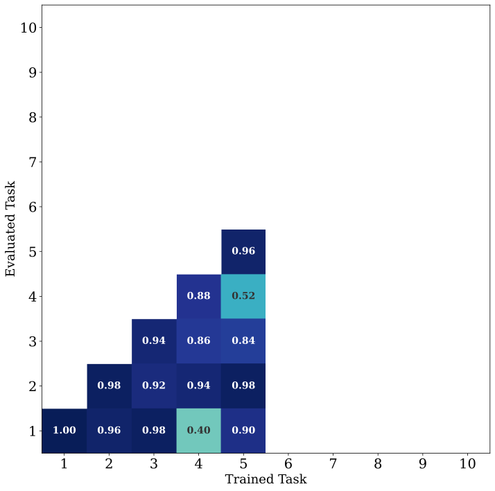
Visual inspired by Huihan Liu
Rehearsing Past Tasks: Training a new task is nearly guaranteed to destroy past task knowledge without some regularization. In our work, we study a common regularization approach called Experience Replay (ER). The idea is simple: keep a buffer of past experiences and replay them during training.
Measuring Retention: We measure a policy's past task retention through Negative Backward Transfer (NBT), visualized as the shaded area below. Click through different ER buffer sizes to see how they affect this score. Higher is worse, lower is better.
Negative Backward Transfer (NBT) Score: 0.42
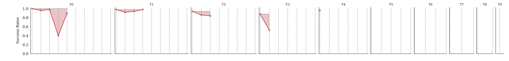
Show Experiment Details
Diffusion U-Net policy with Resnet-18 encoder. Results shown on the canonical LIBERO-Goal ordering on the 50 supplied test-time reset states. Buffer percentage represents percentage of the past task data used in the ER buffer, sampled randomly at the start of every task.
New Task Interactions with Existing Tasks
Most robot continual learning works look at this NBT metric, but not many look at how it arises. Does a policy forget past tasks slowly, or all at once? Below, we plot a single task's performance across different learning orders. Look at how this task's performance (task 6) changes as the model learns task 8 (orange region).
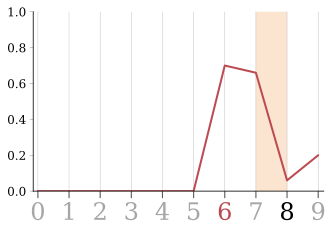
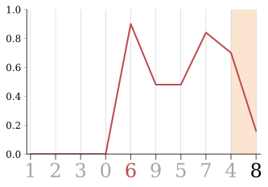
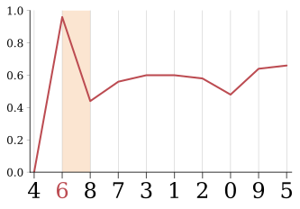
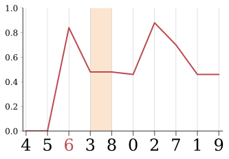
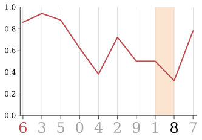
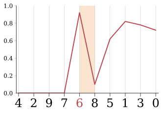
Show Experiment Details
Diffusion U-Net policy trained on the first few supplied LIBERO task training orderings where task 8 comes after task 6. Using a 1% buffer size.
What we found: forgetting a task does not occur gradually. When some tasks are learned, other tasks experience a steep decline in performance. To understand why this happens, let's look at our conflicting task pairs, 6 and 8. The target objects in the tasks are next to each other, which makes the observations in the two tasks similar at the start.
Task 6 (Old) · Cream Cheese in Bowl
Task 8 (New) · Bowl on Plate
Initial Representation Overlap
If two similar tasks are trained simultaneously, the policy will learn to tell their states apart. But if they are trained in sequence, a policy may incidentally collapse the observation space of the second (new) task into the space of the first one. This happens because the latent space was never construted with the new task in mind, and broad visual similarities can lead to full overlap.
We indeed see this phenomenon for the Cream Cheese to Bowl and Bowl to Plate tasks described above. In the latent space of a policy trained on Cream Cheese to Bowl, the new Bowl to Plate task has many states in the overlap of the past task representations.
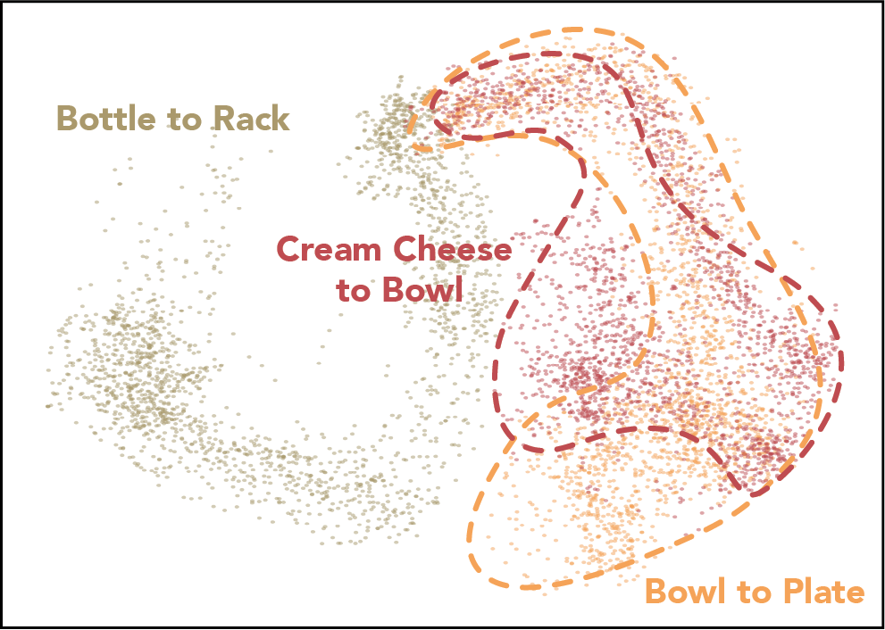
Initially, the current policy's observation encoder collapses Bowl to Plate (new task) into the same latent space as Cream Cheese to Bowl (existing task)
Conflicting Actions
Collapsing new tasks into existing representation spaces can create conflict if the required actions are different. To understand this, we plot both state similarity to past tasks and action disagreement of the new Bowl to Plate task. We compute action disagreement by comparing the predicted actions of the policy with the ground truth actions for each state. We compute state novelty from the nearest neighbor distance to past task data in the latent space.
New trajectory: Bowl to Plate
The two highlighted regions show areas of high state similarity paired with high action disagreement.
The first region is the conflict between the Cream Cheese to Bowl and previous Bowl-related tasks. The second region is the conflict between the Bowl to Plate and previous Bowl-related tasks.
In these high state similarity, high action disagreement areas of the new task, the policy is presented with similar inputs and different required outputs to its existing task set. We propose these conflict regions as a mechanism for catastrophic forgetting in robot policies. Therefore, the old task data most similar to these conflict regions should be especially important for rehearsal in an ER buffer. We call this subset of old task data, Memory Anchors.
Show Experiment Details
Nearest neighbor plot: computed nearest neighbor from the old task data to the current observation using the policy's own observation latent space. Action disagreement plot: added noise to the action label, denoised it using the diffusion policy, and compared the denoised output to the action label.
03 · Finding Memory Anchors
Finding Memory Anchors
The Three Step Approach
We turn our observations above into a three-step approach for identifying Memory Anchors using the current policy, old task data, and the new task data.
- State Representation Overlap. Using the latent space of the current policy, find the transitions in the new data that overlap with the old task data.
- Action Prediction Disagreement. Within this state overlap of the new task data, identify transitions where the current policy predicts something significantly different from the action labels.
- Anchor Selection. Using the current policy's latent space again, select the nearest old task data that are closest to the new task data isolated from the previous action disagreement step.
The figure below illustrates the whole process, which is described in detail with interactive visualizations in the sections below.
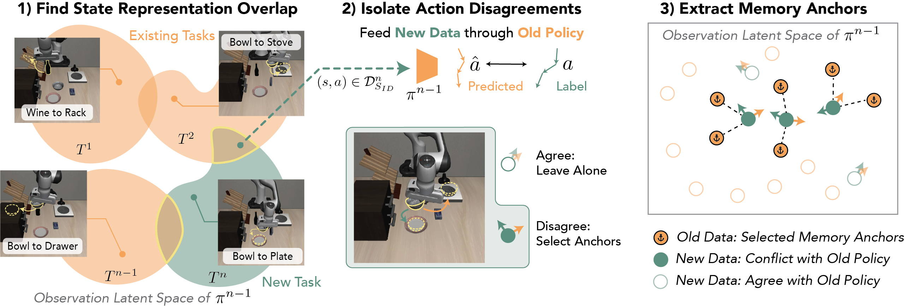
State Representation Overlap
Old and new task data are both placed into the current policy's representation space. Latent distances between new and old data naturally segment the new task data into two groups: inside the representation overlap, and outside the overlap. Using clustering, we isolate the new task data within this overlap. Look at how this approach segments the Bowl to Plate task:
Existing Tasks
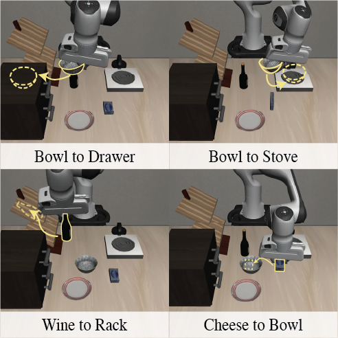
New Task: Bowl to Plate
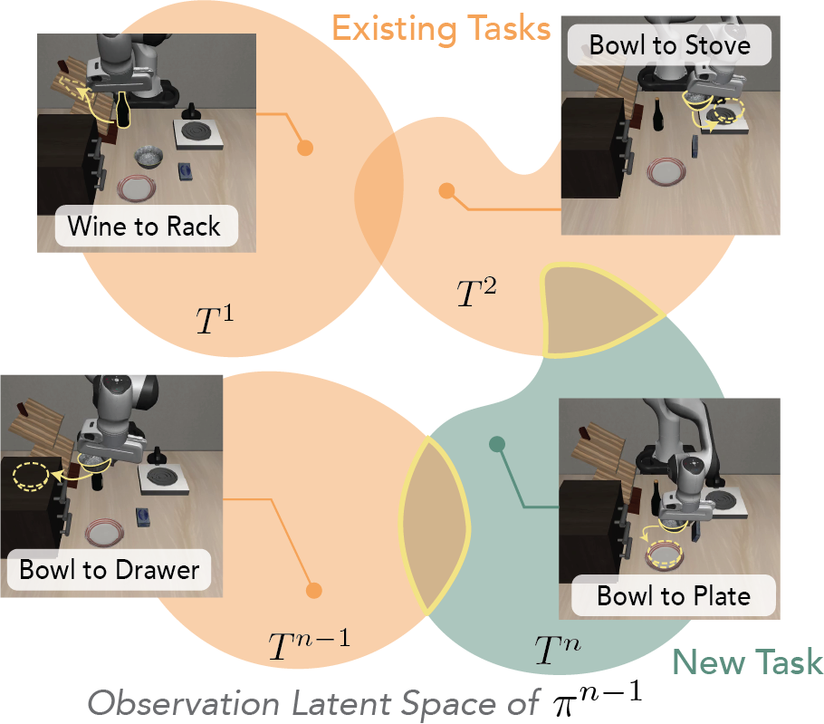
Inside Overlap
Placeholder explanation of why this transition falls inside the state-overlap region.
Example 1/12
FAQ · What representations do you use?
You could use any representation that the current policy uses, but we found the most success using the observation embeddings, a combination of visual embeddings and language embeddings. You can compute the stats (mean, median, nth quartiles) of the pairwise distances between new and old embeddings, and use these features in a K-means clustering algorithm.
FAQ · Why not segment by timestep?
While it is true that LIBERO typically starts in state overlap and then diverges, it requires tuning the timestep threshold. This heuristic is also not generally true. In our real robot experiment, state overlap is interleaved throughout a new task trajectory.
FAQ · What if the new task is very different?
If the new task is in an entirely different environment (like it happens in LIBERO-Long), clustering still separates closer from further states, as an ordering still exists in latent space. We find that Memory Anchors still impacts highly heterogeneous task sequences (see results), though the selection process becomes less interpretable.
Action Disagreement
In the previous step, we found a subset of new task data that occupies the same latent space as the old task data. In this step, we want to further subsample the new task data by isolating the points that require different actions from what the current policy expects. To measure action disagreement, we add noise to the action labels, run denoising using the diffusion policy, and compare to the original labels. We select transitions with significantly higher divergences than a baseline computed on a validation set.
New Task Observation (from State Overlap)
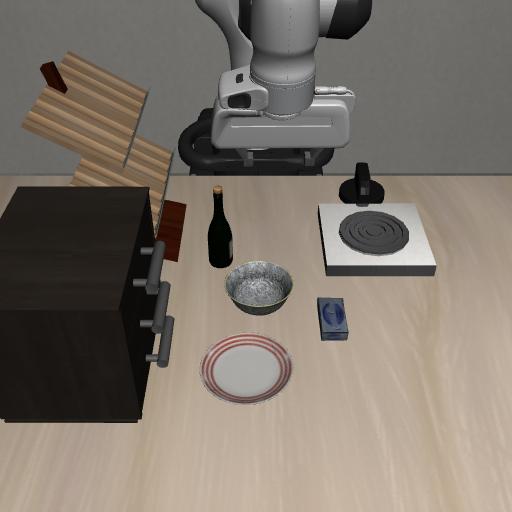
Action Disagreement
Predicted Action Agrees
Placeholder explanation for agree example 1: despite the state overlap, the policy predicts an action consistent with the new task.
Example 1/8
FAQ · Why can you trust the predictions of a policy fed with new task data that it hasn't seen yet?
The new task data fed into the policy in Step #2 has already been filtered to be within the latent space of old task data. This doesn't guarentee that it will be fully in-distribution (e.g. the language description will be new), but it increases the likelihood of the policy producing a meaningful denoising. Even if the new task data is fully out of distribution (e.g. new environment), the result is letting all of the representation overlap data through to anchor selection, which is a valid strategy when the new data is very different.
FAQ · Why not just run inference on the data and compare to action labels?
This approach also works, but it can produce false positives for multimodal data with multiple correct actions. By adding noise, we preserve enough action structure to preserve the chosen modality if the policy agrees with the action.
Anchor Selection
That action disagreement subset of the new task data is most likely to cause catastrophic forgetting during training. The old data most similar to this subset therefore plays a critical role in anchoring past performance, which we call the Memory Anchors. Below are examples of Memory Anchors extracted for the Bowl to Plate task. Hover over the images to see the tasks they come from. Notice how they focus on critical decision areas, including the bowl grasp and the initial object reaching.
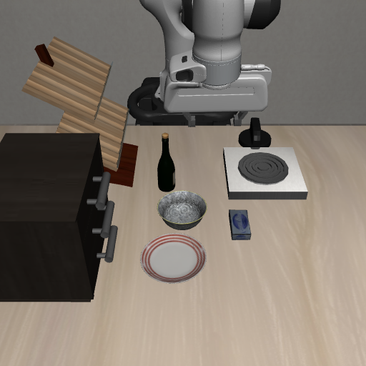
Frame 10
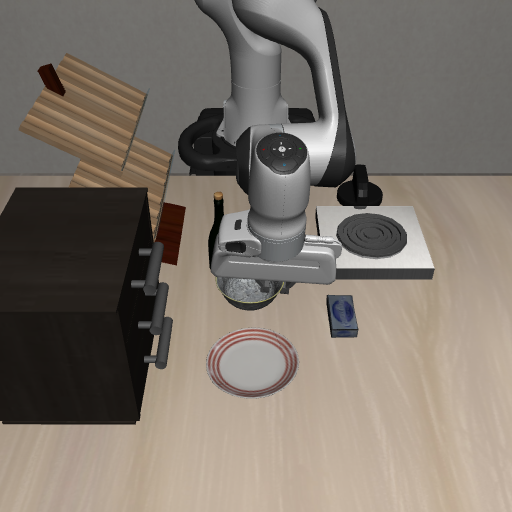
Frame 43
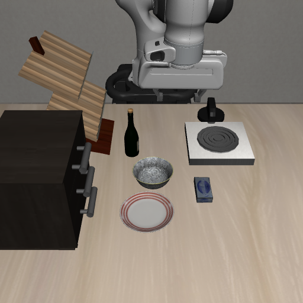
Frame 14
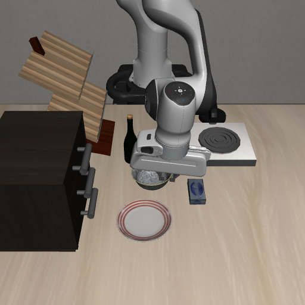
Frame 59
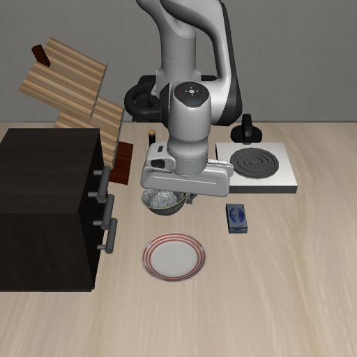
Frame 45
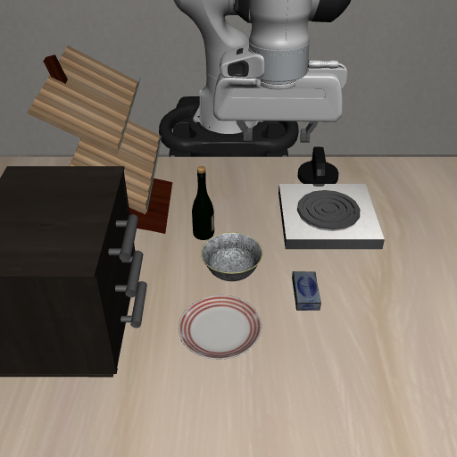
Frame 13
Frame 62
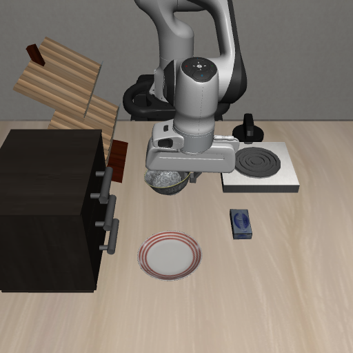
Frame 52
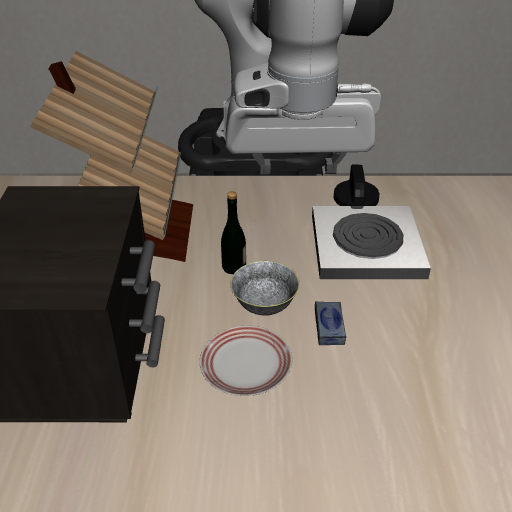
Frame 12
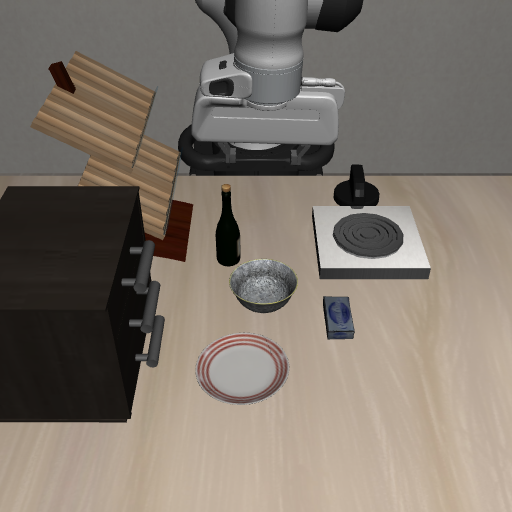
Frame 14
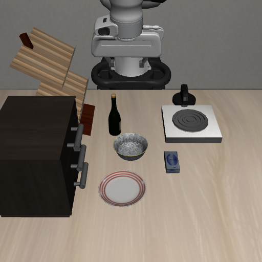
Frame 4
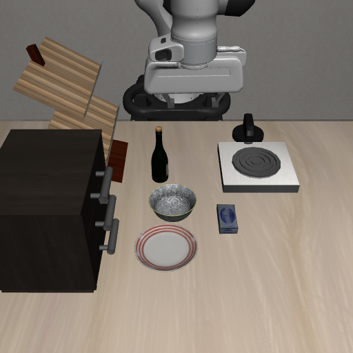
Frame 12
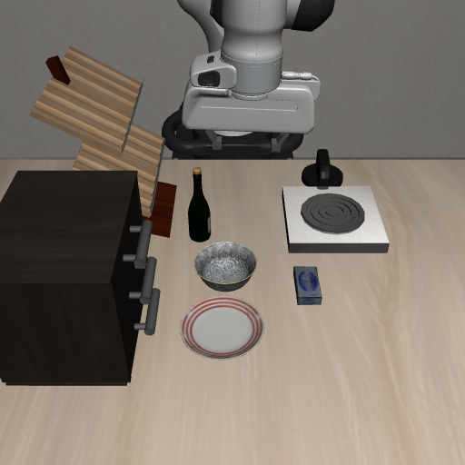
Frame 11
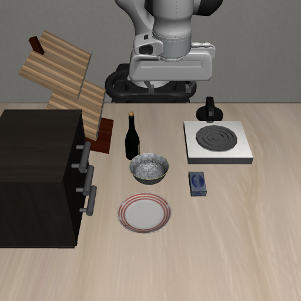
Frame 12
Memory Anchor
Hover over a Memory Anchor for more details.
FAQ · Is the whole process resource intensive?
The whole extraction process takes up a very small percentage of the training run (~3%) and unlike other enhanced ER methods, does not require any per-step costs or gradient computations. Extracting Memory Anchors does scale with the size of the past task dataset. If the dataset becomes unwieldy, it can be subsampled and/or the selection processes can be approximated to bound the compute.
04 · Impact of Memory Anchors
Impact of Memory Anchors
In the experiments below, we test our claims about Memory Anchors on the LIBERO continual learning benchmark and real-world robot tasks.
Taking Memory Anchors Away
Memory Anchors are naturally present in a randomly selected ER buffer (RandER). To test their importance, we conduct a simple experiment. We remove some Memory Anchors (top 1%, 5%, 10%) from the sampling process and measure catastrophic forgetting.
What we found: the fewer Memory Anchors available, the worse the forgetting, even as the total number of memories in the ER buffer stay the same.
Show Experiment Details
Using an ER buffer size of 1000 (total, not per task) across all trials. The only difference between all experimental conditions is the past task dataset. In the RandER condition, all of the dataset is equally likely to be chosen. In the RandER w/o X% condition, the X% best Memory Anchors are removed from the datasets before running RandER sampling. The reported values are average NBT (Negative Backward Transfer), error bars across one SEM.
Adding More Memory Anchors
If taking away Memory Anchors worsened forgetting, adding more Memory Anchors should reduce forgetting. We test this by adding Memory Anchors into the ER buffer (10% / 20%) and then filling the rest randomly (AnchorER). Below, we graph the worst-case NBT, computed from the six most conflicting task-task pairs identified from RandER baseline runs.
What we found: by enriching the buffer with more Memory Anchor samples, catastrophic forgetting is reduced significantly on the worst task-task interactions.
Show Experiment Details
Using an ER buffer size of 1% of the past data size. The randomly selected Memory Anchors can be enough to support many task-task pairings, which is why we chose to focus on the worst case interaction subset for this experiment. This subset was found by looking at all of the task-task interactions on a set of RandER runs and picking the 6 interactions with the highest average forgetting across training orders. We report the average forgetting on these interactions for AnchorER and RandER.
FAQ · Why not use all Memory Anchors?
As seen in some of the Memory Anchor examples in the last section, Memory Anchors concentrate around critical areas of high conflict. They are critical for maintaining past task performance (as supported by our subtraction experiment), but they are not the only critical pieces of data in the ER buffer. Having high buffer diversity is also important to fully cover the support of past tasks.
On VLA models
All the results so far have been reported on a diffusion policy trained from scratch. We verify that Memory Anchors still impact larger, pretrained models like the π0.5 VLA. Complementary to the findings in this paper, we did observe that VLAs have near perfect task retention with sufficient memory budgets. However, at the low ER buffer sizes and full finetuning used in our experiments, the π0.5 VLA actually performed worse than from-scratch diffusion policy. Under these conditions, adding more Memory Anchors was beneficial. Removing Memory Anchors also further degraded performance.
VLA Continual Learning Results
Click on the two experimental conditions to see examples of how Memory Anchors impact VLA performance.
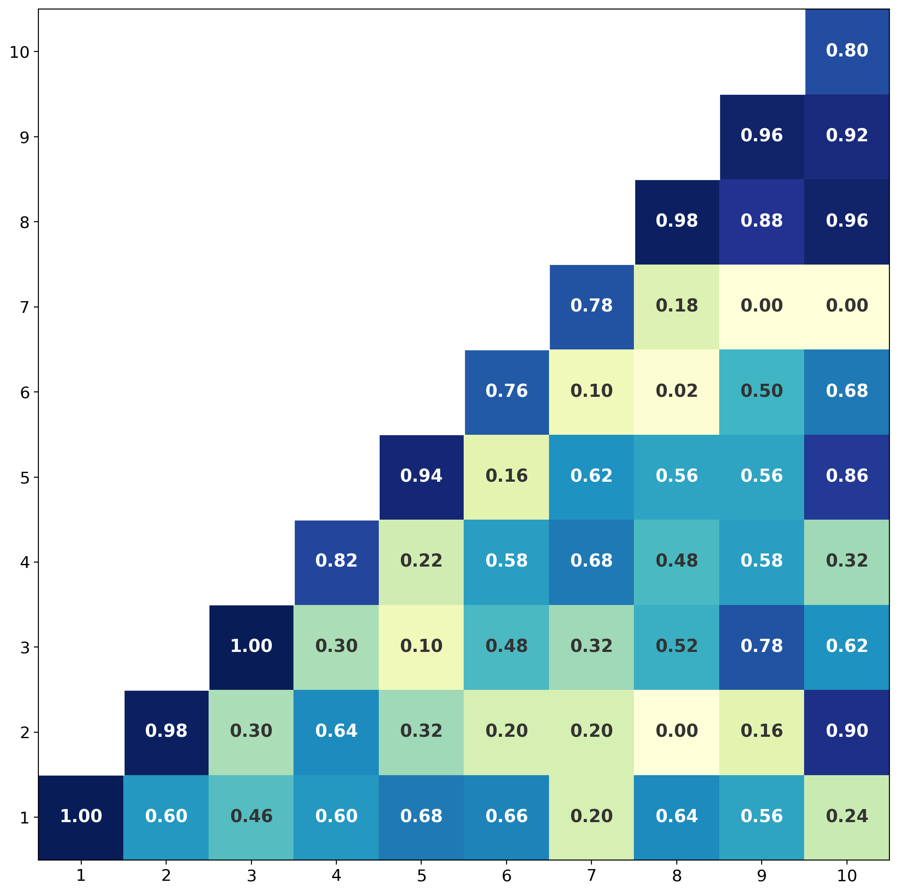
RandER: keeping behind 1% of past data in the ER buffer leads to low task retention.
Reducing Memory Anchors
On the π0.5 VLA, performance degrades as Memory Anchors are removed from the past task data before the ER buffer is sampled.
Enriching Memory Anchors
On the π0.5 VLA, enriching the ER buffer with Memory Anchors (10%, 20% of buffer) reduces forgetting over Random ER.
FAQ · Why are the RandER numbers different in the two experiments?
Consistent with our experiment setup on diffusion policy, we use a 1% buffer size for the addition experiment and a 1000 total buffer for the subtraction experiment. We use the larger, fixed-size buffer for the subtraction experiment because RandER does better, showing us that memory anchors are still important even at a larger budget. Likewise, we use a smaller buffer on the addition experiment to show that Memory Anchors can improve performance even with limited data. This finding is consistent between VLAs and diffusion policies.
Real World: Jar Opening Task
The simulated LIBERO benchmark shows that Memory Anchors are effective in long sequences of tasks, but do these findings transfer to a real robot? To investigate, we make a diagnostic task suite on a real robot, OpenJar. It consists of three visually similar jars that require different strategies: Counterclockwise, Clockwise, and Lift. Unlike the LIBERO benchmark that has only a few decision points per task, OpenJar requires the robot to make a decision every time the gripper is moving towards the jar. For the screw-type jars, this happens many times during the task.
Task 1: Counterclockwise
Open the jar by rotating the lid counterclockwise and then lifting.
Task 2: Clockwise
Open the jar by rotating the lid clockwise and then lifting.
Task 3: Lift
Open the jar by directly lifting the lid.
We train a diffusion policy on the jar sequence and compare the success rates with AnchorER and RandER. The videos below show a representative rollout from each of the evaluated tasks in the training order. Hover over a clip to see the success rates and additional details.
AnchorER (Ours)
RandER (Baseline)
OpenJar Continual Learning Task
Hover over a clip to see the corresponding evaluation success.
Memory Anchors impact real robot performance, both reducing forgetting and improving the learning of new tasks compared to RandER. The final success rate of AnchorER on the three tasks is 1.7x higher than RandER. Further results and visualizations are shown in the summary figure below.
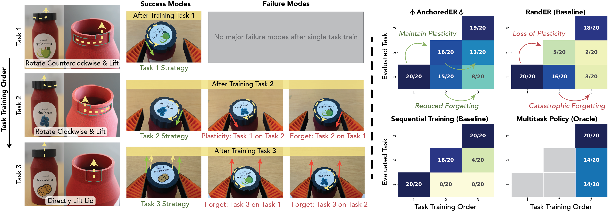
Real World: Sweater Folding Task
The OpenJar task was designed to be diagnostic of continual learning challenges.
Task 1: Placeholder
Placeholder description for sweater folding task 1.
Task 2: Placeholder
Placeholder description for sweater folding task 2.
Task 3: Placeholder
Placeholder description for sweater folding task 3.
Placeholder for the sweater folding cross-task video matrix description — explain the training/eval setup and what to look for once real results are in. Hover over a clip to see the success rates and additional details.
AnchorER (Ours)
RandER (Baseline)
Sweater Folding Continual Learning Task
Hover over a clip to see the corresponding task evaluation success and notes.
Placeholder for the sweater folding summary figure — the image below shows the success rates of the methods and baselines, plus further visualizations of catastrophic forgetting on the sweater folding suite.
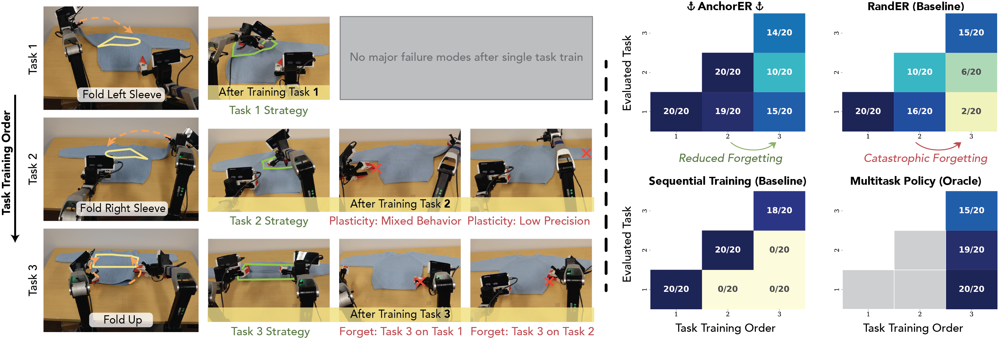
05 · FAQ
FAQs
Placeholder intro for FAQs that don't fit neatly under a single result above.
FAQ · Placeholder question one?
Placeholder answer one.
FAQ · Placeholder question two?
Placeholder answer two.
FAQ · Placeholder question three?
Placeholder answer three.
06 · BibTeX
BibTeX
@article{placeholder2026,
title = {Placeholder Title Goes Here},
author = {Last, First and Last, First},
journal = {arXiv preprint arXiv:0000.00000},
year = {2026}
}